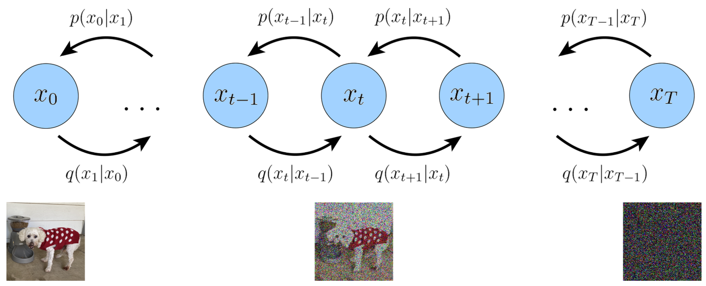
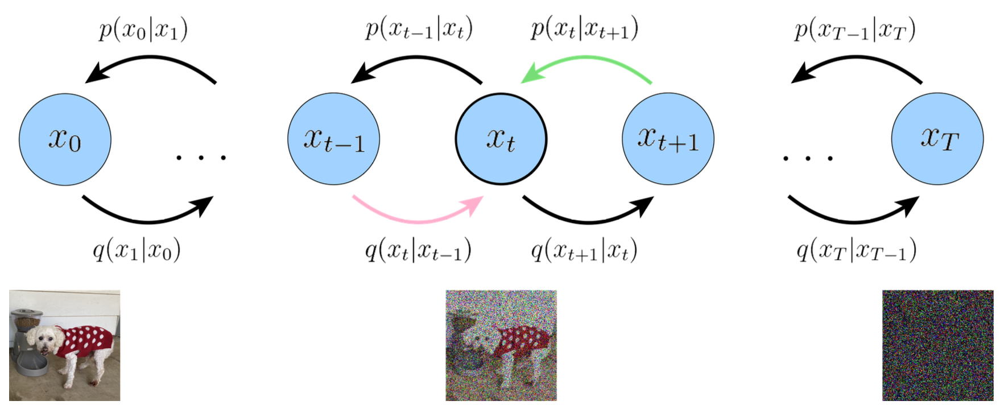
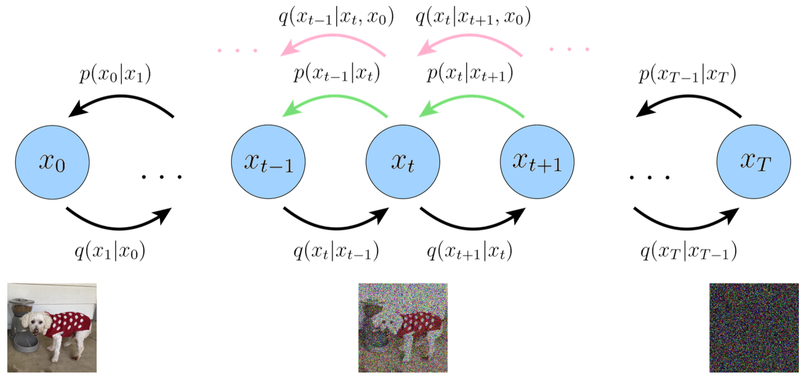

Understanding Diffusion Models: A Unified Perspective
Generative Models
Paper
Calvin Luo · arXiv · 2022
Variational Diffusion Models

Figure from the paper: a Variational Diffusion Model with forward noising transitions
$q(x_t\mid x_{t-1})$ and reverse denoising transitions $p_\theta(x_{t-1}\mid x_t)$.
Variational Diffusion Models (VDM) is simply a Markovian Hierarchical Variational
Autoencoder with 3 key restrictions:
The latent dimension is equal to the data dimension.
The structure of the latent encoder at each timestep is not learned.
The Gaussian parameters of the latent encoders vary over time in such a way that the
distribution of the latent at final timestep $T$ is a standard Gaussian.
The latent dimension is equal to the data dimension
Represent both true data samples and latent variables as $x_t$, where $x_0$ is a true
data sample and $t\in[1,T]$ represents a corresponding latent with hierarchy indexed by
$t$.
The structure of the latent encoder at each timestep is not learned
It is a Gaussian distribution centered around the output of the previous timestep, where
the mean and standard deviation can be set beforehand as hyperparameters, or learned as
parameters.
Note that $\alpha_t$ is a potentially learnable coefficient that can vary with the
hierarchical depth $t$, for flexibility.
The final latent is a standard Gaussian
$\alpha_t$ evolves over time according to a fixed or learnable schedule structured such
that the distribution of the final latent $p(x_T)$ is a standard Gaussian:
$$
x_T\sim\mathcal{N}(0,I)
$$
Collectively, what this set of assumptions describes is a steady noisification of an
image input over time: progressively corrupt an image by adding Gaussian noise until
eventually it becomes completely identical to pure Gaussian noise.
The VDM can be optimized by maximizing the ELBO, which can be derived as:
Reconstruction Term: Predict the log probability of the original data
sample given the first-step latent.
Prior Matching Term: This term requires no optimization, as it has no
trainable parameters; furthermore, as we have assumed a large enough $T$ such that the
final distribution is Gaussian, this becomes zero.
Consistency Term: It endeavors to make the distribution at $x_t$
consistent from both forward and backward processes. A denoising step from a noisier
image should match the corresponding noising step from a cleaner image, for every
intermediate timestep.

Figure from the paper: the consistency term matches the forward and backward
distributions at each intermediate $x_t$.
This term is minimized when we train $p_\theta(x_t\mid x_{t+1})$ to match the Gaussian
distribution $q(x_t\mid x_{t-1})$.
Actually optimizing the ELBO using these terms might be suboptimal. The consistency
term is computed as an expectation over two random variables $\{x_{t-1},x_{t+1}\}$ for
every timestep, so the variance of its Monte Carlo estimate could potentially be higher
than a term that is estimated using only one random variable per timestep.
Rewrite encoder transitions as $q(x_t\mid x_{t-1})=q(x_t\mid x_{t-1},x_0)$, where the
extra conditioning term is superfluous due to the Markov property:
Reconstruction Term: This term can be approximated and optimized
using Monte Carlo estimation.
Prior matching term: It has no trainable parameters, and is also equal
to zero under our assumptions.
Denoising matching term: We learn desired denoising transition step
$p_\theta(x_{t-1}\mid x_t)$ as an approximation to tractable, ground-truth denoising
transition step $q(x_{t-1}\mid x_t,x_0)$.

Figure from the paper: the lower-variance objective matches $p_\theta(x_{t-1}\mid x_t)$
to $q(x_{t-1}\mid x_t,x_0)$.
The KL Divergence term
$D_{\mathrm{KL}}(q(x_{t-1}\mid x_t,x_0)\Vert p_\theta(x_{t-1}\mid x_t))$
is difficult to minimize for arbitrary posteriors. In a VDM, we leverage the Gaussian
transition assumption by Bayes rule:
As we already know that
$q(x_t\mid x_{t-1},x_0)=q(x_t\mid x_{t-1})
=\mathcal{N}(x_t;\sqrt{\alpha_t}x_{t-1},(1-\alpha_t)I)$,
what remains is deriving the forms of $q(x_t\mid x_0)$ and
$q(x_{t-1}\mid x_0)$.
The form of $q(x_t\mid x_0)$ can be recursively derived through repeated applications
of the reparameterization trick. Suppose that we have access to $2T$ random noise
variables $\{\epsilon_t^*,\epsilon_t\}_{t=0}^{T}\overset{\mathrm{i.i.d.}}{\sim}
\mathcal{N}(0,I)$. Then, for an arbitrary sample $x_t\sim q(x_t\mid x_0)$:
Now, knowing the forms of both $q(x_t\mid x_0)$ and $q(x_{t-1}\mid x_0)$, we can
proceed to calculate the form of $q(x_{t-1}\mid x_t,x_0)$ by substituting into the Bayes
rule expansion:
Therefore, $q(x_{t-1}\mid x_t,x_0)$ is normally distributed with mean
$\mu_q(x_t,x_0)$ that is a function of $x_t$ and $x_0$, and the variance
$\Sigma_q(t)$ as a function of $\alpha$ coefficients:
In order to match approximate denoising transition step
$p_\theta(x_{t-1}\mid x_t)$ to ground-truth denoising transition step
$q(x_{t-1}\mid x_t,x_0)$ as closely as possible, we can also model it as a Gaussian.
Furthermore, as all $\alpha$ terms are known to be frozen at each timestep, we can
immediately construct the variance of the approximate denoising transition step to also
be $\Sigma_q(t)$.
We must parameterize its mean $\mu_\theta(x_t,t)$ as a function of $x_t$, since
$p_\theta(x_{t-1}\mid x_t)$ does not condition on $x_0$.
In equation 24, where we can set the variance of the two Gaussians to match exactly,
optimizing the KL Divergence term reduces to minimizing the difference between the means
of the two distributions:
where $\hat{x}_\theta(x_t,t)$ is parameterized by a neural network that seeks to predict
$x_0$ from noisy image $x_t$ and time index $t$. Then, the optimization problem
simplifies to:
The SNR represents the ratio between the original signal and the amount of noise present:
high SNR means more signal and low SNR means more noise. In diffusion model, we require
the SNR to monotonically decrease as time $t$ increase.
Following the simplification of the objective, we can directly parameterize the SNR at
each timestep using a neural network, and learn it jointly along with the diffusion model.
$$
\mathrm{SNR}(t)=\exp(-\omega_\eta(t)),
$$
where $\omega_\eta(t)$ is modeled as a monotonically increasing neural network with
parameters $\eta$.
By combining our parameterization of SNR, we can also explicitly derive elegant forms for
the value of $\bar{\alpha}_t$ as well as for the value of $1-\bar{\alpha}_t$:
These terms are necessary for a variety of computations.
Three Equivalent Interpretations
A VDM can be trained by simply learning a neural network to predict the original natural
image $x_0$ from an arbitrary noisy version $x_t$ and its time index $t$.
Firstly, we can utilize the reparameterization trick. In our derivation of the form of
$q(x_t\mid x_0)$, we can rearrange:
Here, $\hat{\epsilon}_\theta(x_t,t)$ is a neural network that learns to predict the source
noise $\epsilon_0\sim\mathcal{N}(0,I)$ that determines $x_t$ from $x_0$. Therefore,
learning a VDM by predicting the original image $x_0$ is equivalent to learning to
predict the noise $\epsilon$.